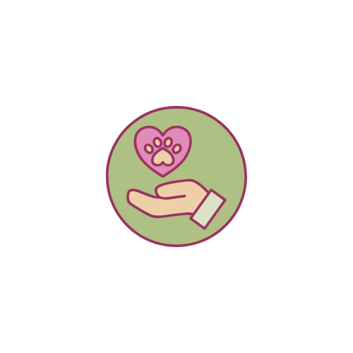

Quem somos

A ONG Anjos de Pelo nasceu do sonho de um pequeno grupo de protetores independentes que, ao testemunharem o abandono crescente de animais nas ruas, decidiram transformar compaixão em ação. No início, os resgates eram feitos com recursos próprios, em lares temporários e clínicas parceiras.
Com o tempo, o trabalho ganhou força nas redes sociais e atraiu voluntários, doadores e famílias dispostas a adotar com responsabilidade. O que começou como uma iniciativa informal se tornou uma organização estruturada, comprometida com resgate, reabilitação, castração, campanhas de adoção e educação sobre guarda responsável.
Hoje, a Anjos de Pelo atua com projetos sociais, mutirões,parcerias veterinárias e programas de apadrinhamento, sempre com o propósito de oferecer uma segunda chance a quem não pode pedir ajuda:nossos amigos de quatro patas. Junte-se a nós nessa missão de amor e solidariedade!
Missão
Promover o bem-estar de animais em situação de abandono ou vulnerabilidade, oferecendo resgate, cuidados, acolhimento e novas oportunidades por meio da adoção responsável e do engajamento social.
Visão
Ser referência no país em proteção animal, construindo uma rede de voluntários, adotantes e apoiadores capaz de transformar realidades e inspirar uma cultura de respeito, amor e responsabilidade com a vida.
Valores
- Amor e respeito à vida: cada animal é único e merece dignidade.
- Responsabilidade: atuamos com ética, compromisso e transparência.
- Empatia social: acreditamos que o cuidado animal transforma pessoas e comunidades.
- Colaboração: valorizamos o trabalho em equipe e as parcerias para ampliar nosso impacto.
- Transparência: prestação de contas clara e acessível sobre ações e recursos.
Conecte-se
E-mail:
Telefone:
Endereço:
Rua das Flores, 123 - São Paulo, SP - Brasil